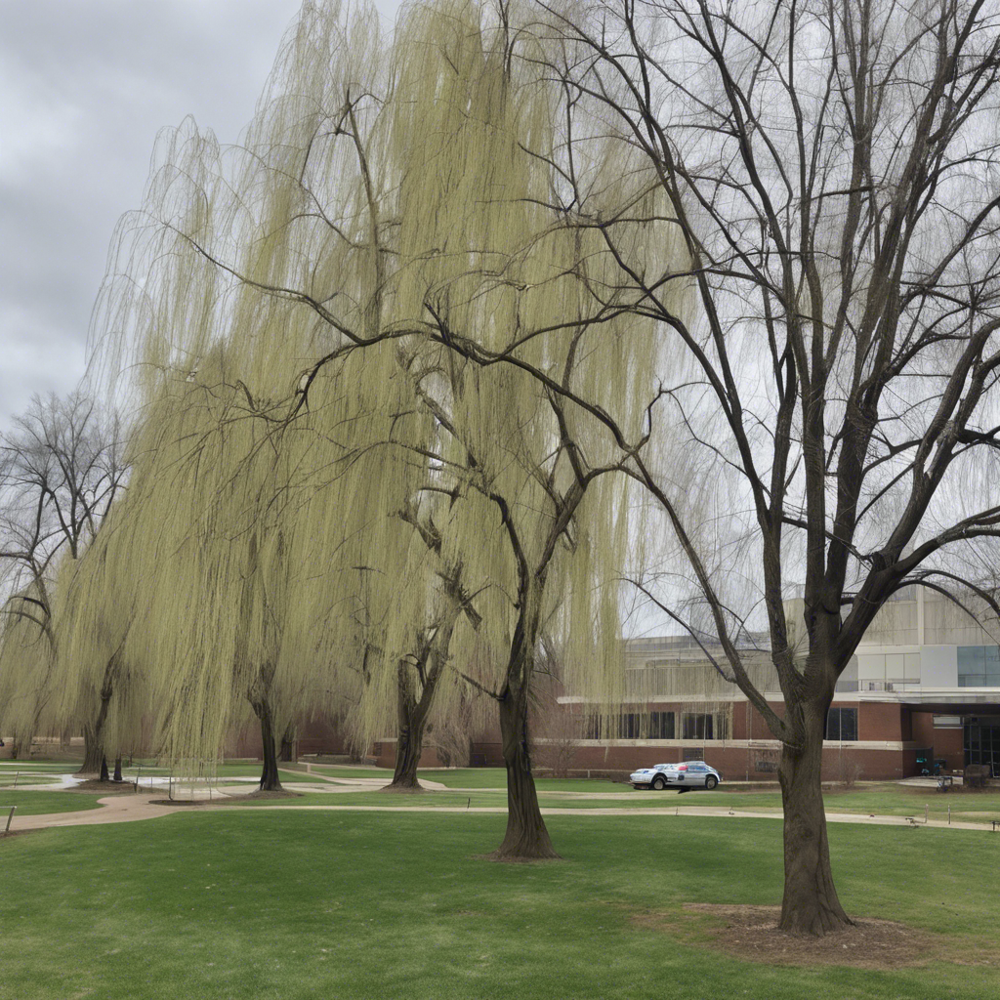

佛像
主题：后悔药
限定词：一次选择
字数：1.83K

你知道怎样动耳朵吗？这是一种随机的性状，大概和基因有关，有些人天生就可以，但是大部分人完全做不到：当然，动耳朵这种事情完全没有什么大不了的，和我们的故事也毫无联系。总之，有这样一个未来。在寻常的某天，科学家们发现了这样一种特殊能力：某一小部分人可以自由地倒回生命中的任何时刻，重新做出选择。但是这些人的身份是随机的，无法预测--我们又怎么会知道谁注定会动耳朵呢？
这些人重新定义了什么是精英。在正常的时间线上，这些人有完美无暇的人生履历，概率论在他们身上失效：他们参与的每一次科学实验都达到了完美的结果，他们出演的影视剧不存在NG这种事情，所有的高难度镜头都是一遍过，他们的语言表达圆润而真诚，让所有人如沐春风；就算是其中的穷小子，一段真诚的告白也能恰好打动面前白富美公主的心，携手步入完美的婚姻。他们在工作、学习、感情方面都处于绝对的优势地位，人生金光闪闪。
而对于愤愤不平的普通人而言，能够聊以自慰的是：死亡是最后的平等。那些人或许能够选择度过无数的人生可能性，但是在医院的病床上，大家都不可避免的看到那个最终时刻。
医生的步伐从门外传来，他的出现打破了病房的宁静。他冷漠地扫视了一眼病床上的两位老人，将手中的医疗记录放在床头，然后转身走向护士站。
“护士，替换一下病床床尾的病人信息表。” 医生的声音平淡而不带感情。
护士疑惑地看了医生一眼，但还是按照医生的指示去执行。她小心翼翼地替换了床尾的病人信息表，将原本显示着老人们的信息换成了一个新的病人的信息，显示着他将在32分钟后入住这个病房。
老爷爷略微有些惊讶，看向医生：“医生，我们的情况怎么样了？”
医生轻轻地摇了摇头，语气依然平静：“多器官衰竭，身体到了极限。你们只有之后三十分钟的时间。我给你们留下一些私人空间，希望你们可以好好地相处一会儿。”
老爷爷刚刚像是要有所动作，但医生立刻劝阻道：“先生，请你保持安静，你的身体已经非常虚弱了。”好像意识到自己的话语有些过于直白，医生稍微挤出一个同情的微笑，然后在笑容消失时，已经转身离开。护士收起床头的医疗记录册，摇摇头，像是对二老解释，也像是自言自语，“这就是‘佛像’，是不是？”
“佛像”是对这类人的统一称呼。那些拥有时间倒流能力的人有一个共同的特征，那就是他们的感情在经历了无数可能性之后变得麻木。无论是喜怒哀乐，他们都已经体验过无数次，对于情感的波动已经变得漠然，人生对其而言，已经成了对照攻略最优解去执行的按部就班。这种特点使得他们在外表上显得异常平静和冷漠。
老爷爷叹了一口气，望向天花板。
老爷爷说，“所以，就到这里了。”
老奶奶伸出颤抖的手，放到了老爷爷的手臂上, “恐怕是的。”
病房外的走廊里传来的喧嚣像是来自于另一个世界。房间里只剩下了宁静。
老爷爷轻轻握住老奶奶的手，喃喃地说，“我爱你。你会离开我吗？”
老奶奶的眼神中透露着一丝疑惑，她轻声说：“亲爱的，我一直在这儿。“
老爷爷嘟囔，“是的，是的。“然后慢慢转过头，避开老奶奶的视线，看向窗外。
外面是医院的小广场。从窗户往外看，能看到杨柳和国槐。天色阴沉，刚刚经历了寒冬，国槐枝杈嶙峋，像是老人手背的静脉。一旁的杨柳反而早早长出叶芽，被早春的冷风吹动，在灰暗的背景下，反倒是绿的晃眼。
老爷爷回头，望向老奶奶，说，“我不是…”,然后顿住。他重新组织言语，说，“我爱你。但咱这辈子太平凡了。我太平凡了。我不该和你在一起。”
老奶奶没说话，慢慢地摩挲他的手臂，像是过去73年一样。
老爷爷继续嘟囔，“我不是你的‘最优解’。“他看向自己的爱人，“你失望吗？”
老奶奶轻轻压了压他的胳膊，“我失望到了现在，你还说这些有的没的。”
老爷爷又长舒一口气，像释怀，或者叹气。他说出了自己的秘密，“你是‘佛像’，但是又完全不像。我一直知道。我没有期待什么，但是一直不知道你哪天会走。“
这个倒是在老奶奶意料之外。她牵住老爷爷的手，说：“现在呢？”
老爷爷眼神放空。过了一会儿，他慢慢地说，“我爱你，我不知道，我们这一生，对你而言，真的是你的最优解吗？”
老奶奶轻声地说，“我也不知道。”
老爷爷回过头，看向她。老奶奶想了想，慢慢地说，“我也不知道。你是我的唯一的选项…我不想去提前知道，你不知道的事。”
她笑了，着重补充道，“我们一块儿遇到的所有事儿，我们得有一样的情绪，我觉得。”
老爷爷轻轻攥住老奶奶的手，捏了捏，闭上了眼睛；老奶奶也慢慢把头回正，阖上了双眼，静静地感受着彼此的存在。
“我爱你…所以，你从来没有时光倒流过嘛？“
“没有…遇见你之后，每一刻的你都是新的，每一刻都是新的…”
窗外的微风也停了，柳树的枝条不再摆动，空空地垂了下来，好像整个世界已经慢慢地凝住，停在了这最后的一瞬。